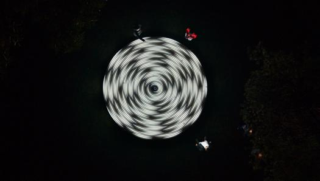
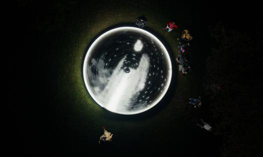
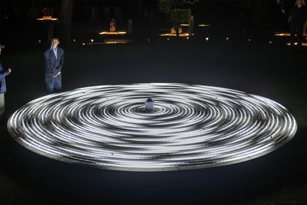
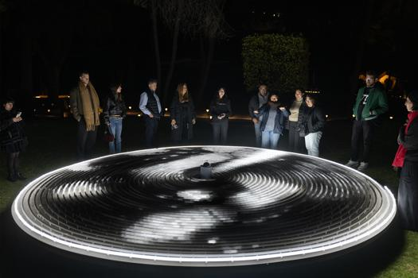
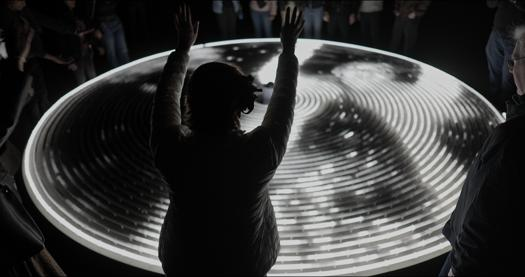

Spiral Reflector, 2026
| 👤for | Rafael Lozano-Hemmer |
|---|---|
| #Year | 2026 |
| 🔗Official Site | lozano-hemmer.com/spiral_reflector.php |
| 📋I did | Hardware |
"Spiral Reflector" is a computerized display made with a 300m long continuous line of LED white lights embedded in a tubular diffuser and arranged to form a five-meter-diameter spiral. The work is installed inside the Helen Escobedo and Juan Siles' “landscaped crater” of the Sculpture Garden at the Museo de Arte Moderno in Mexico City.
At the center of the spiral is a panoptic surveillance camera, a "black hole" that flushes and absorbs all the light, from time to time. As the camera pans slowly, a scanning line appears to illustrate the direction of its attention. All images captured are erased with a frequent "spiral flush", followed by a short "pensive mode."





Acknowledgment
This artwork by Rafael Lozano-Hemmer is the result of the combined efforts of a talented and diverse group of professionals. Each person has contributed unique skills and expertise to the creation of this piece. For more information about the team and their roles, please visit our official website.